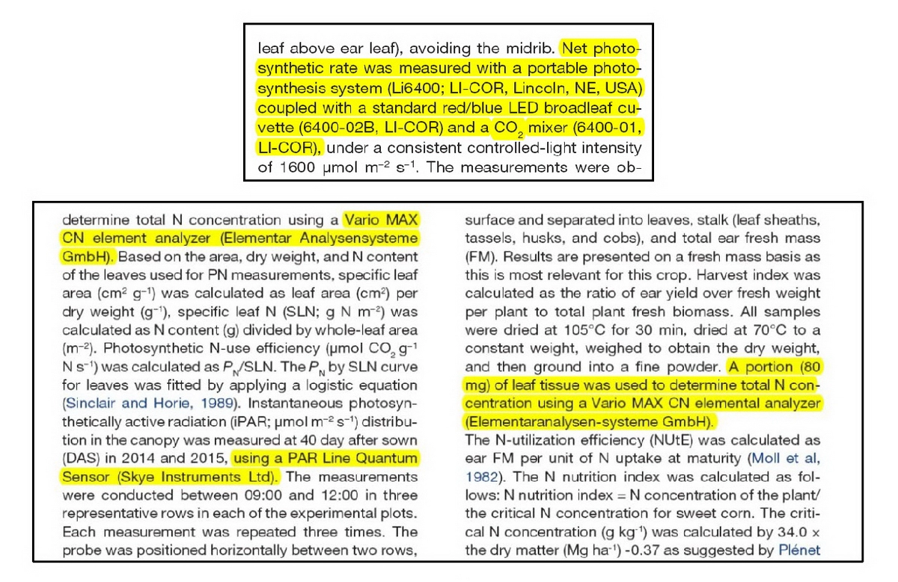
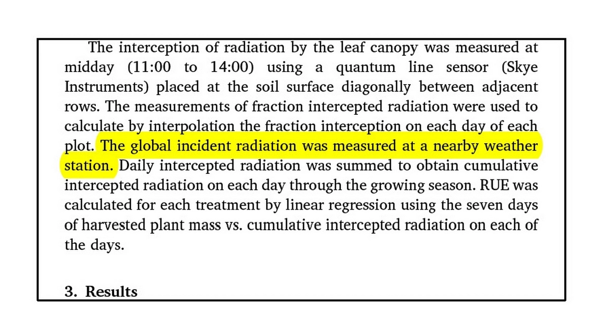
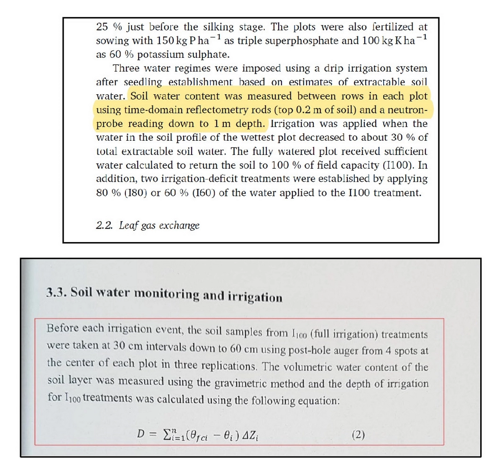

Another category of evidence pointing to systematic scientific corruption at Shiraz University involves the reporting of laboratory and field equipment that never existed at the university.
In other cases, instruments were claimed to have been used during specific growing seasons when they were actually out of service.
For example, in the Materials and Methods sections of papers authored by one of the university’s doctoral graduates—and once again under the supervision of the same professors mentioned earlier (Lesson One, Part Two)—it was claimed that the following laboratory instruments had been used in a two-year field experiment conducted at the Faculty of Agriculture of Shiraz University:
- - Portable photosynthesis system (Li6400; LI-COR, Lincoln, NE, USA) coupled with a standard red/blue LED broadleaf cuvette (6400-02B, LI-COR) and a CO₂ mixer (6400-01, LI-COR)
- - Portable infrared gas analysis system (IGRA model LCA4-ADC, Hoddeson, UK)
- - Mario MAX CN elemental analyzer (Elementar Analyser Gmb)
- - Quantum line sensor (Skye Instruments)

According to everyone who was familiar with the faculty—including myself, having spent twenty years there and continuing to cultivate wheat variety collections and conduct other research even during periods when I was not a student—these instruments, under these brands and specifications, have never existed at Shiraz University.
Some have never existed anywhere in Iran.
Disproving these claims would be simple.
If the instruments exist, then publish their serial numbers, procurement records, or photographs from Shiraz University.
I have formally and repeatedly requested precisely that.
The response from nearly every institution involved has been silence.
The story does not end there.
Other examples of fabricated accounts involving laboratory instruments include reports claiming the use of solar radiation data allegedly obtained from the meteorological station of the Faculty of Agriculture at Shiraz University during specified growing seasons and incorporated into mathematical models.
However, through the diligence of one of Shiraz University’s most distinguished and enduring academic figures—and much to the misfortune of the authors—it became clear that throughout all of the growing seasons cited in the dissertation and papers, the relevant sensor at the meteorological station had been nonfunctional.
Because of international sanctions, it could neither be repaired nor replaced.
As a result, such data were never recorded and were not even available to the station itself.
A photograph of the faulty sensor can be seen in the corresponding slide.
There are still other examples involving the reporting of imaginary equipment—for instance, claims regarding the use of a neutron probe—the details of which can be followed through the associated Telegram channel.
Despite formal reports documenting these obvious instances of scientific misconduct, systematic collusion within Shiraz University, across three successive governments, once again prevented the retraction of even a single related paper.

